This is the project website for our SIGGRAPH Asia 2020 paper
"To cut or to fill: a global optimization approach to topological simplification"
Authors: Dan Zeng, Erin Chambers, David Letscher, Tao Ju
ACM Transactions on Graphics (Proc. ACM Siggraph Asia 2020), 39(6): No. 201 (Paper)
Abstract: We present a novel algorithm for simplifying the topology of a 3D shape, which is characterized by the number of connected components, handles, and cavities. Existing methods either limit their modifications to be only cutting or only filling, or take a heuristic approach to decide where to cut or fill. We consider the problem of finding a globally optimal set of cuts and fills that achieve the simplest topology while minimizing geometric changes. We show that the problem can be formulated as graph labelling, and we solve it by a transformation to the Node-Weighted Steiner Tree problem. When tested on examples with varying levels of topological complexity, the algorithm shows notable improvement over existing simplification methods in both topological simplicity and geometric distortions.
...we compute a set of cuts (red) and fills (blue) to simplify topology...
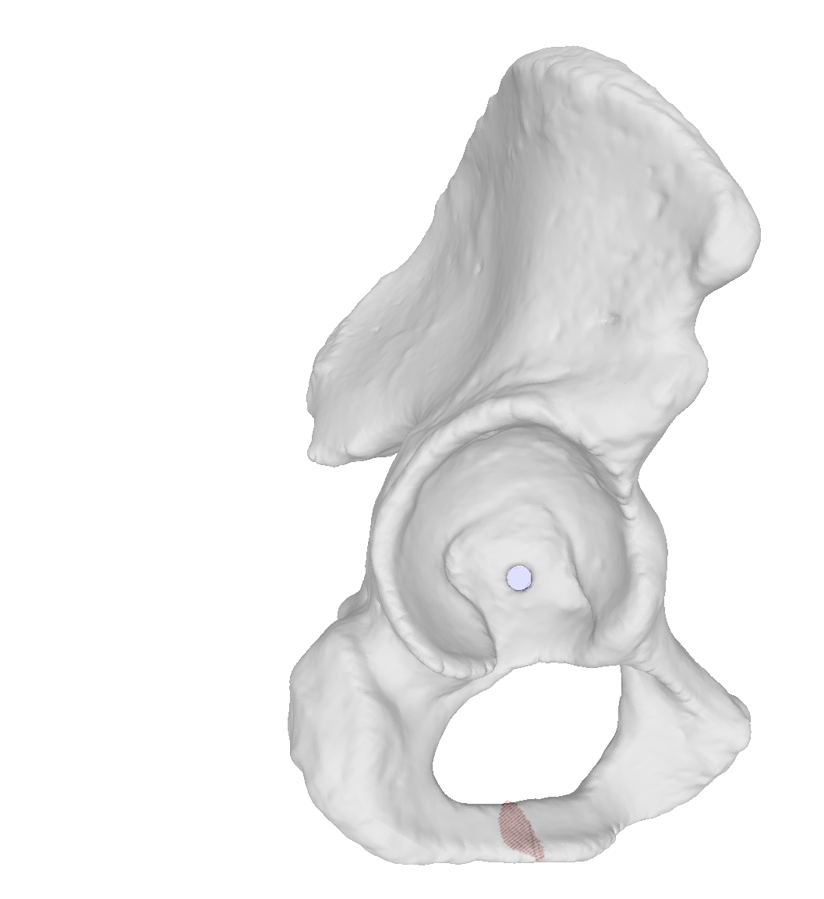
...select the subset which most simplifies topology while minimizing a geometric score...
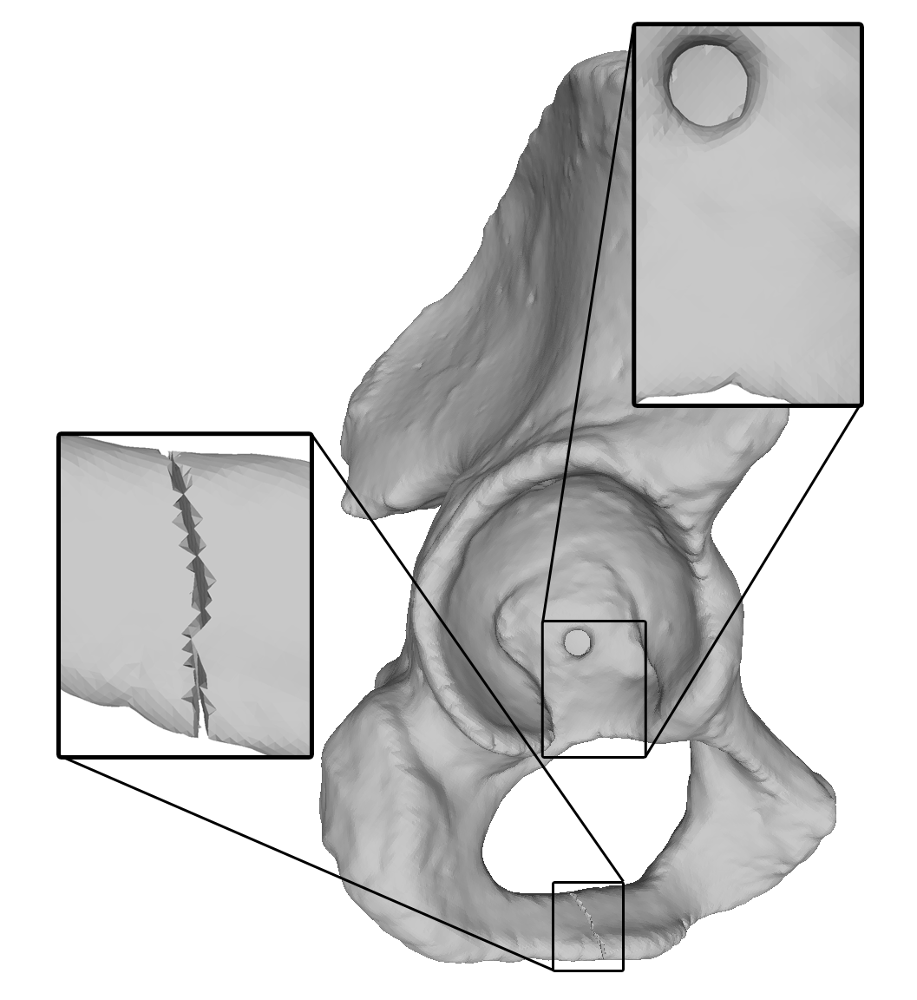
...to produce a simplified shape.
Examples
Provided here are the examples used in the figures of the paper, as well as a few others. We have applied our algorithm to simplify shapes coming from a variety of domains in both geometry modeling and biomedical and plant imaging. All
In each case below, we provide the topology of the input shape and simplified shape, and the command needed to reproduce the result (see code).
Our algorithm is flexible to the types of cuts and fills used for simplification: we demonstrate here distance-based, intensity-based, and morphological operation-based cuts and fills.
Using distance-based cuts and fills
If the goal is to simplify topology while minimizing the geometric change in terms of the volume occupied by the shape, then a distance field can be used to compute cuts and fills. We used the Vega-FEM library to compute our signed distance fields (SDF). Our github code documentation provides instructions on how to convert a shape (surface mesh) to the volumetric SDF used as input to our code.
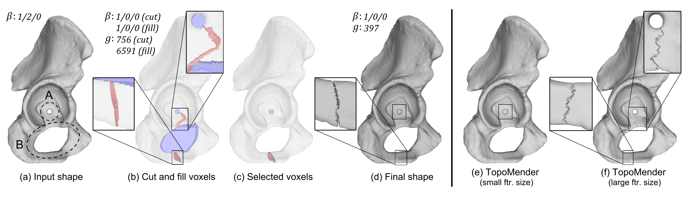
Paper Fig. 10. (a): The Hip model with two handles (marked A and B). (b): Cut voxels (red) and fill voxels (blue) produced by topology-controlled inflation and deflation. (c): Selected fill voxels (filling in the small handle hole of A) and cut voxels (cutting open the narrow part of the handle body of B). (d): The modified shape. (e,f ): Results of TopoMender using a small parameter (e), which leaves the handle B in the shape, or using a large parameter (f ), which cuts open the wide handle body of A. (β: number of connected components, handles, and cavities; д: geometric cost)
Command to reproduce this result: TopoSimplifier --in hip.tif --out hip_out.tif
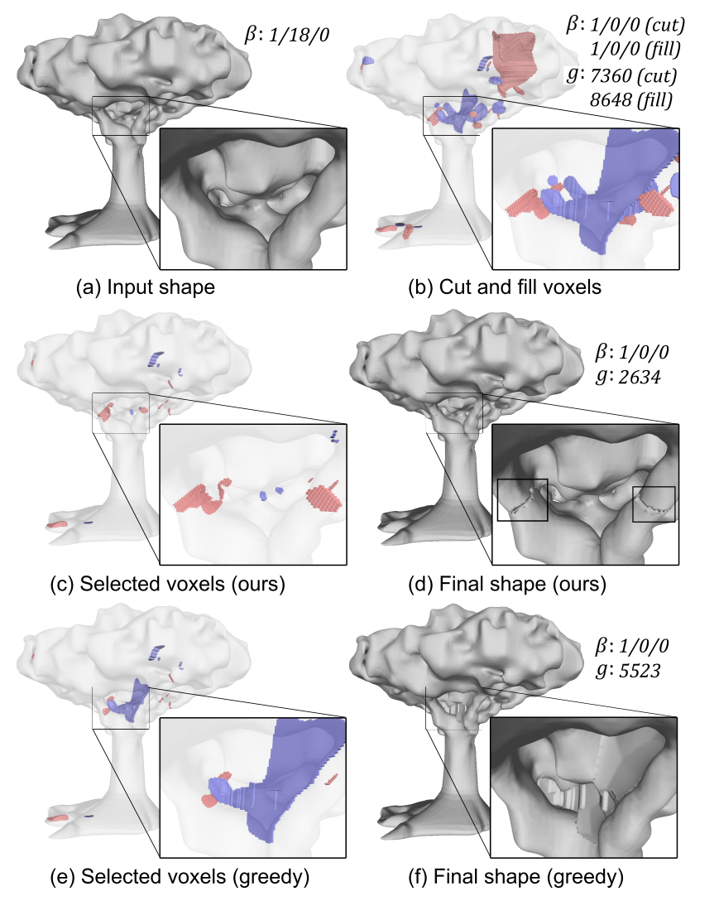
Paper Fig. 11. (a): The Tree shape with 18 handles. (b): Input cut (red) and fill (blue)
voxels. (c): Cut and fill voxels selected by our algorithm. (d): The modified
shape. (e): Cut and fill voxels selected by the greedy strategy, which include
a large group of fill voxels. (f ): Resulting shape of the greedy strategy. (β: number of connected components, handles, and cavities; д: geometric cost)
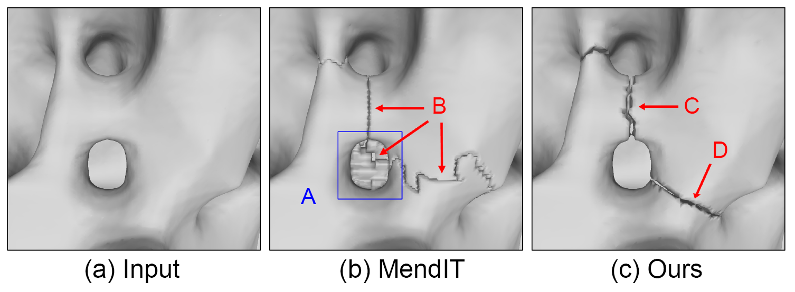
Fig. 12. Comparing result of our method (c) and MendIT (b) on a region
of the Tree with two handles (a). While MendIT fills a handle hole (A) and
makes a long cut (B) on the handle body, our method makes two short cuts
(C,D) without filling the handle hole.
Command to reproduce this result: TopoSimplifier --in examples/tree.tif --out tree_out.tif
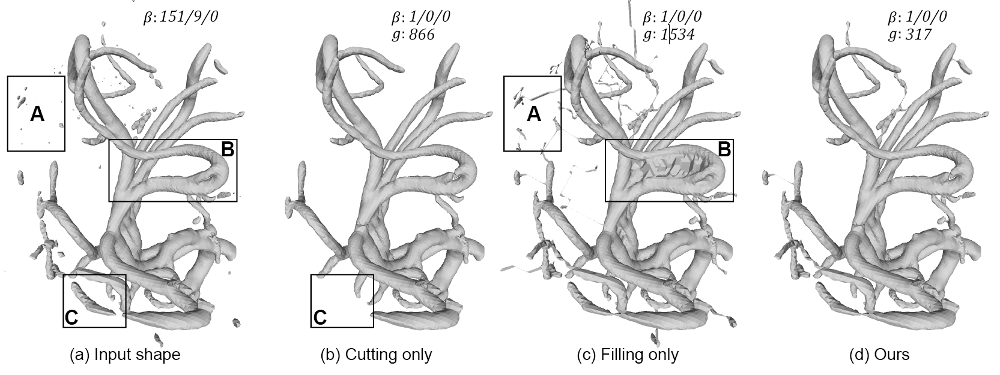
Paper Fig. 1. To simplify the topology of a 3D shape (a), performing cutting alone (b) or filling alone (c) results in excessive changes, such as removing large
components (box C in (b)), creating long bridges to distant islands (box A in (c)) and large patches to fill in a handle (box B in (c)). Given a set of pre-computed
cuts and fills, our method optimally selects a subset of them to maximally simplify topology while minimizing the impact on the geometry (d). (β: number of
connected components, handles, and cavities; д: geometric cost)
Command to reproduce this result:TopoSimplifier --in vessels_distance.tif --out vessel_out.tif --K 0.115 --N -0.485
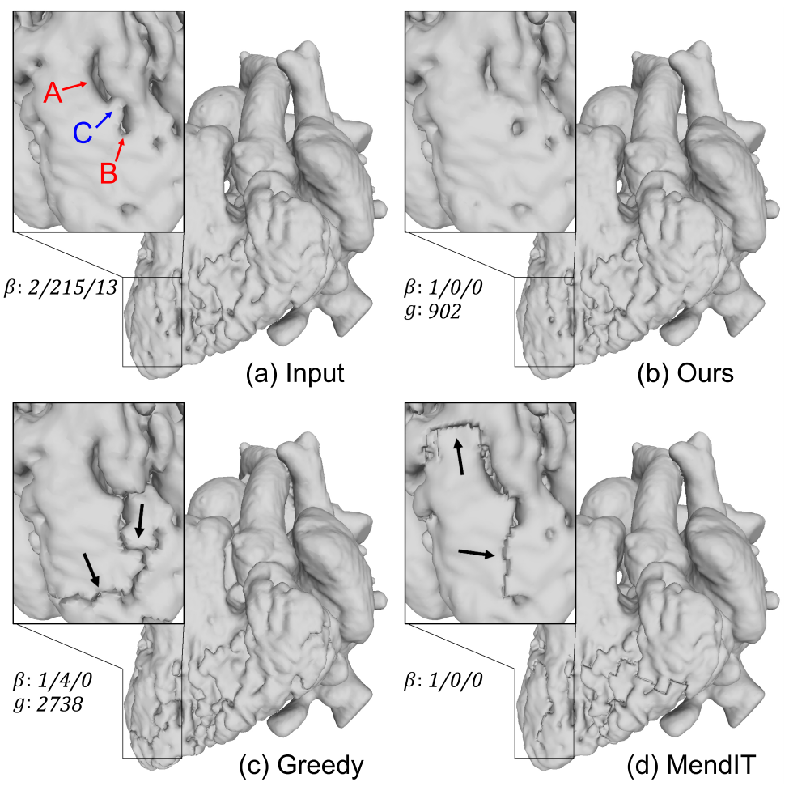
Paper Fig. 14. Comparing the result of our algorithm (b), the greedy labelling
strategy (c), and MendIT (d) on the Heart example. Both our method and
MendIT fully simplify the topology, while the greedy strategy leaves 4
handles in the shape. The inserts show a region where both the greedy
strategy and MendIT make excessive geometric changes. (β: number of
connected components, handles, and cavities; д: geometric cost)
Command to reproduce this result: TopoSimplifier --in heart_distance.tif --out heart_distance_out.tif
Input:
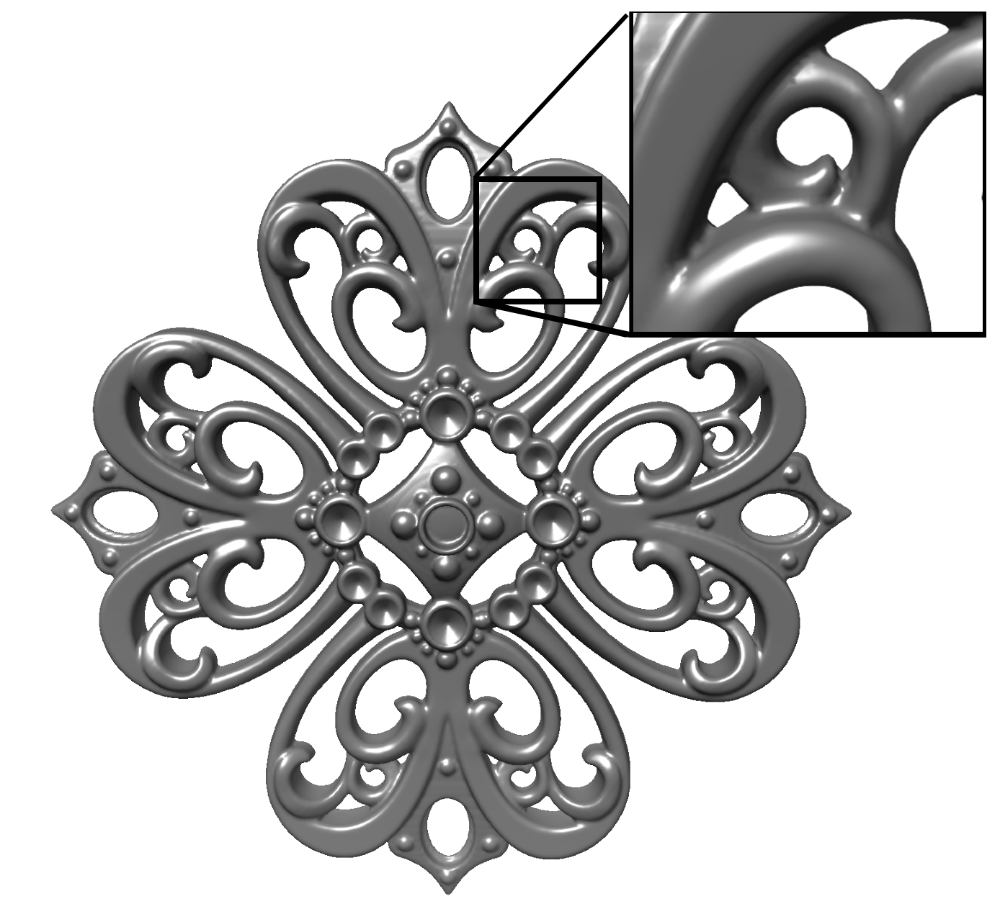
Components: 1 Handles: 48 Cavities: 0
Output:
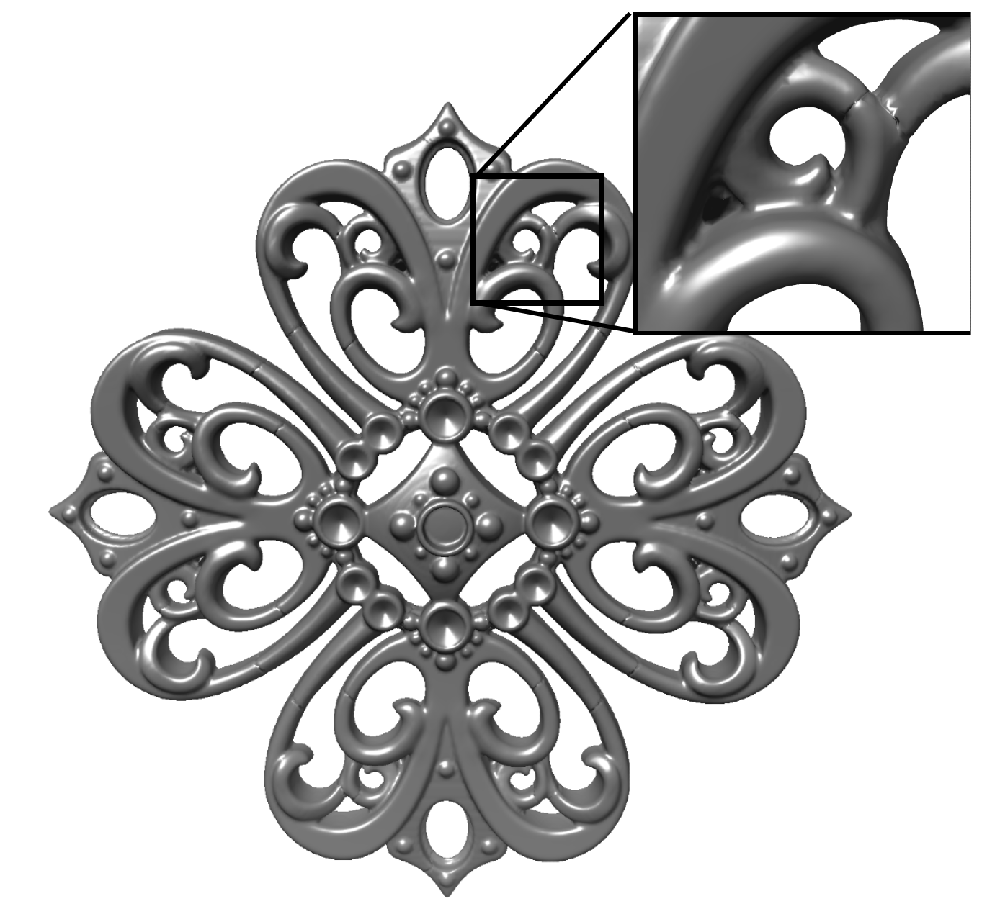
Components: 1 Handles: 0 Cavities: 0
Command to reproduce this result:TopoSimplifier --in filigree.tif --out filigree.tif
Using intensity-based cuts and fills
If the shape has some associated image data, for example if it was segmented from a biomedical / plant image volume, then the intensities of the image volume can be used to generate cuts and fills. When an underlying image volume is available, this will often be the preferred way to compute potential simplifications, rather than using distance-based cuts and fills.
This is the same input shape as the human brain vessel in the distance-based example, but now the image intensity is used to generate the cuts and fills.
p>
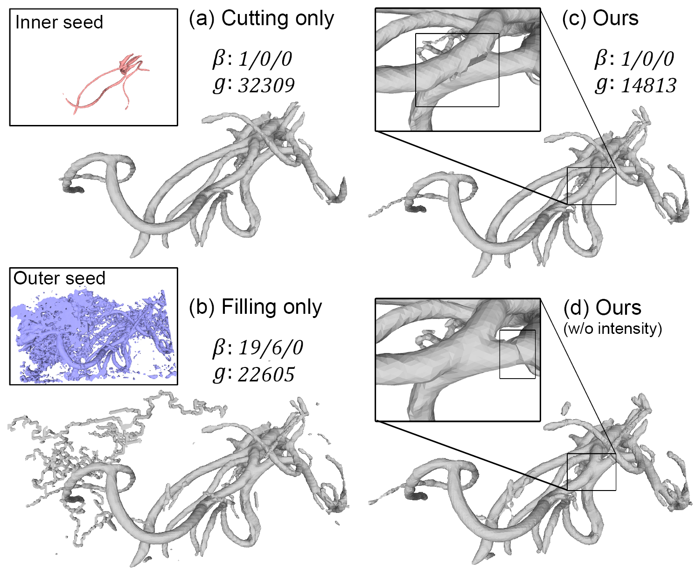
Paper Fig. 15. The shape after subtracting intensity-aware cut voxels (a) or adding
intensity-aware fill voxels (b), and after running our algorithm with the
intensity-aware cuts and fills (c) or distance-based cuts and fills (d). The
inserts in (a,b) show the inner and outer seeds used for inflation and deflation.
The inserts in (c,d) examine a region where the same handle is
removed differently in the two results, either separating the two vessels (c)
or breaking a vessel in the middle (d). (β: number of
connected components, handles, and cavities; д: geometric cost)
Command to reproduce this result:TopoSimplifier --in vessels_intensity/ --out vessels_intensity_out/ --K 121 --S 58 --N 50
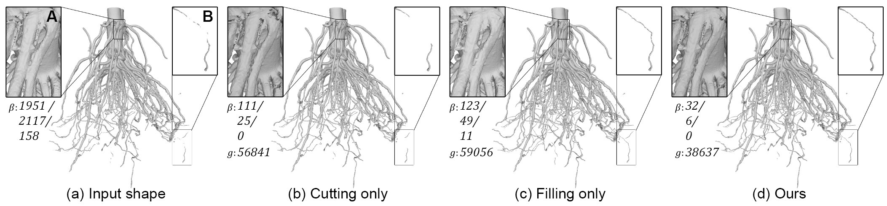
Paper Fig. 17. (a): A highly complex iso-surface from a CT scan of a corn root. (b,c): Results of intensity-aware cutting and filling. (d): Our result. Box A highlights a
handle that is only removed by cutting (which separates the two root branches), and box B highlights islands that are only connected by filling. Our method
resolves both features. (β: number of
connected components, handles, and cavities; д: geometric cost)
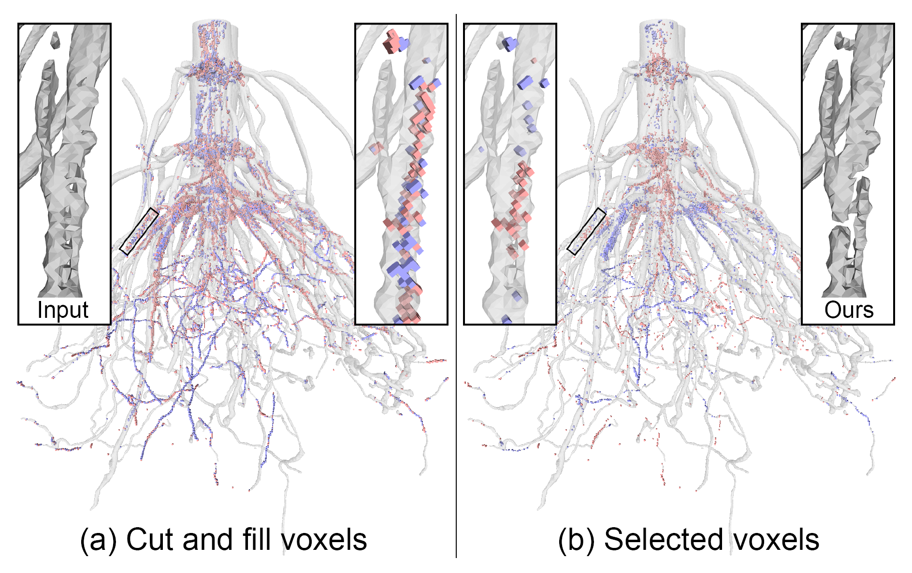
Fig. 18. Cut and fill voxels (a) and those selected by our algorithm (b) on
the Root. The inserts highlight a cluster of cut and fill voxels in a region
with complex topology.
Command to reproduce this result:TopoSimplifier --in root/ --out root_out/ --K 19 --S 15 --N 11
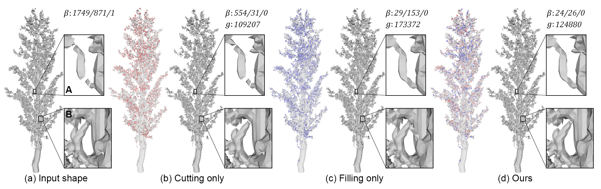
Paper Fig. 16. (a): An iso-surface from a CT scan of a sorghum panicle. (b,c): Results of intensity-aware cutting and filling (cut/fill voxels shown on the left). (d): Our
result. Box A highlights a few islands that are only connected by filling, and box B highlights two handles that are only removed by cutting. Our method
resolves both features. (β: number of
connected components, handles, and cavities; д: geometric cost)
Command to reproduce this result:TopoSimplifier --in sorghum/ --out sorghumOut/ --K 95 --S 75 --N 55
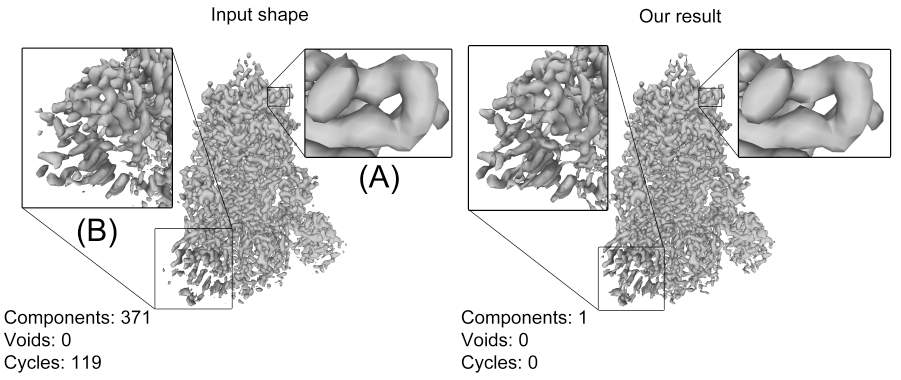
Our algorithm is able to cut the false self-intersection of the alpha-helix (A) and connects the beta strands (B), allowing for the tracing of the protein's backbone structure.
Command to reproduce this result:TopoSimplifier --in covid/ --out covid_out/ --K 174 --S 112 --N 92
Using morphological operation-based cuts and fills
Morphological opening and closing are often used in image processing for noise removal. However, naive opening and closing may increase the number of topological features. In our work, we treat the cuts and fills created by opening and closing as potential topological changes to the shape, and only perform those which globally minimize the shape's topology. We apply this to the human heart example below.
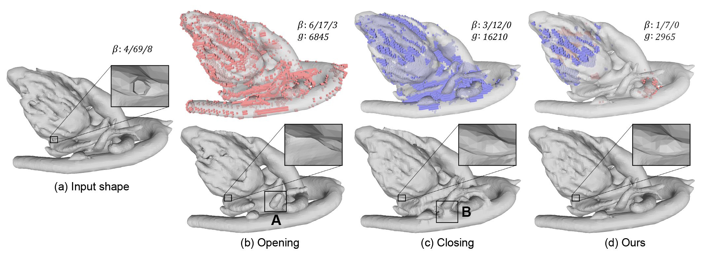
Paper Fig. 19. (a): A heart segmentation. (b): Result of opening (bottom), which contains several new islands (box A), and the corresponding cut voxels (top). (c):
Result of closing (bottom), which merges nearby vessels (box B) and thereby creating new handles, and the corresponding fill voxels (top). (d): Voxels selected
by our algorithm (top) and the modified shape (bottom). The insert examines a handle that is removed in all three methods.
Command to reproduce this result:TopoSimplifier --in heart_intensity/ --out heartOut/ --S 168 --close 3 --open 2